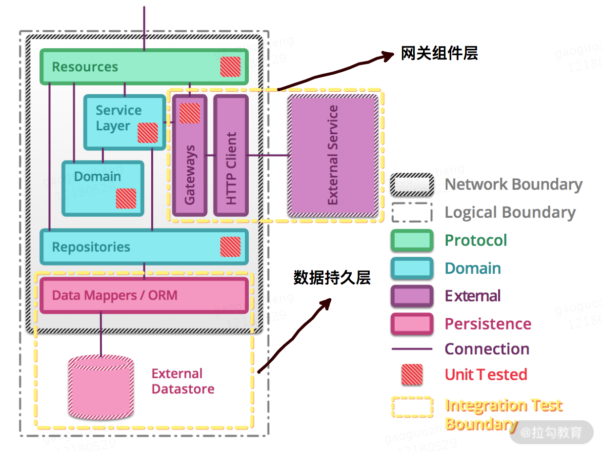
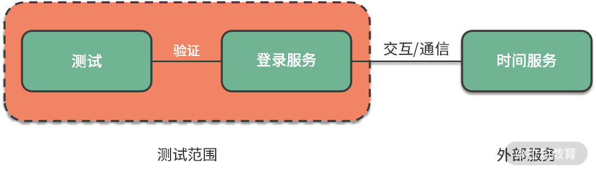
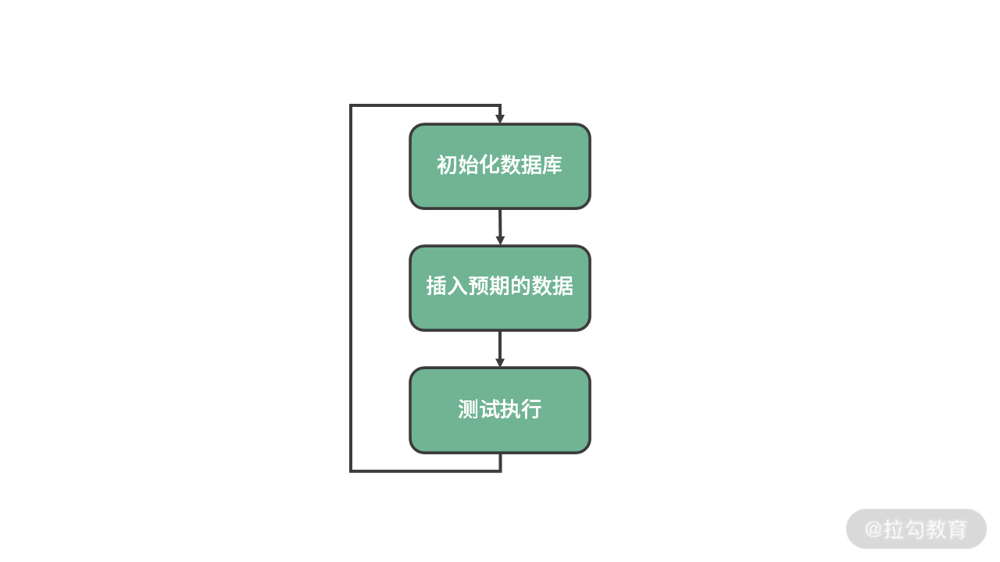

- 00 开篇词 既往不恋，当下不杂，未来不迎.md.html
- 01 微服务架构有哪些特点？.md.html
- 02 微服务架构下的质量挑战.md.html
- 03 微服务架构下的测试策略.md.html
- 04 单元测试：怎样提升最小可测试单元的质量？.md.html
- 05 集成测试：如何进行微服务的集成测试？.md.html
- 06 组件测试：如何保证单服务的质量？.md.html
- 07 契约测试：如何进行消费者驱动的契约测试？.md.html
- 08 端到端测试：站在用户视角验证整个系统.md.html
- 09 微服务架构下的质量保障体系全景概览.md.html
- 10 流程规范篇：高速迭代的研发过程需要怎样的规范？.md.html
- 11 测试技术篇：测试技术这么多，我该如何选型？.md.html
- 12 测试技术篇：如何提升测试效率？.md.html
- 13 测试技术篇：专项测试技术解决了哪些专项问题？.md.html
- 14 CICD 篇：如何更好地利用多个“测试”环境？.md.html
- 15 CICD 篇：如何构建持续交付工具链？.md.html
- 16 度量与运营篇：如何做好质量和效率的度量与运营？.md.html
- 17 度量与运营篇：如何度量与运营效率和价值？.md.html
- 18 组织保障篇：质量是设计出来的.md.html
- 19 软件测试新趋势探讨.md.html
- 20 结束语 QA 如何打造自身的核心竞争力？.md.html
- 捐赠
05 集成测试：如何进行微服务的集成测试？
上一课时，我讲解了微服务架构下的单元测试，它是一种白盒测试技术，目的是验证软件代码中的每个单元（方法或类等）是否符合预期。本节课我来讲解微服务架构下的集成测试。
集成测试的概念
说到集成测试，相信每个测试工程师并不陌生，它不是一个崭新的概念，通过维基百科定义可以知道它在传统软件测试中的含义。
Integration testing (sometimes called integration and testing, abbreviated I&T) is the phase in software testing in which individual software modules are combined and tested as a group. Integration testing is conducted to evaluate the compliance of a system or component with specified functional requirements.
即，集成测试（有时称为集成和测试，简称 I＆T）是软件测试中的阶段，在该阶段中，将各个单独开发的软件模块组合在一起并进行整体测试，以便评估系统或组件是否符合指定的功能要求。
微服务架构下也需要集成测试，需要针对不同服务的不同方法之间的通信情况进行相关测试。 因为在对微服务进行单元测试时，单元测试用例只会验证被测单元的内部逻辑，并不验证其依赖的模块。即使对于服务 A 和服务 B 的单元测试分别通过，并不能说明服务 A 和服务 B 的交互是正常的。
对于微服务架构来说，集成测试通常关注于验证那些与外部组件（例如数据存储或其他微服务）通信的子系统或模块。 目标是验证这些子系统或模块是否可以正确地与外部组件进行通信，而不是测试外部组件是否正常工作。因此，微服务架构下的集成测试，应该验证要集成的子系统之间与外部组件之间的基本通信路径，包括正确路径和错误路径。
微服务架构下的集成测试

微服务结构图与集成测试边界
如上图所示，网关组件层（Gateways+Http Client+External Service）包含了访问外部服务的逻辑，通常包含一个 HTTP/S 的客户端，客户端会连接到系统中另一个微服务或外部服务。数据持久层（Date Mappers/ORM）用于连接外部数据存储。
即，微服务架构下的集成测试主要包括两部分：
- 网关组件层， 微服务的组件与外部服务的通信路径；
- 数据持久层， 数据库访问模块与外部数据库的交互。
这里请注意，因为需要测试微服务下子系统之间的通信和外部服务的通信是否正确，所以理想情况下不应该对外部组件使用测试替身（Test Double）。
下面我们逐一来看这两部分是如何进行集成测试的：
（1）网关组件层集成测试

假设有个登录服务，该服务需要知道当前时间，而时间是由一个外部的时间服务提供的。当向 /api/json/cet/now 发出 GET 请求时，状态码为 200，并返回如下完整的时间信息。
{
$id: "1",
currentDateTime: "2020-07-29T02:11+02:00",
utcOffset: "02:00:00",
isDayLightSavingsTime: true,
dayOfTheWeek: "Wednesday",
timeZoneName: "Central Europe Standard Time",
currentFileTime: 132404622740972830,
ordinalDate: "2020-211",
serviceResponse: null,
}
如果访问的 URL 错误，比如向 /api/json111/cet/now发出 GET 请求时，状态码为 404，返回如下错误提示。
您要找的资源已被删除、已更名或暂时不可用。
一般来说，集成测试会负责检验与外部服务的连接以及交互协议相关的问题，如 HTTP header 的缺失、SSL 处理的异常，或者请求/响应的不匹配。所有的错误处理逻辑都需要在测试中被覆盖，以确保所使用的服务和协议客户端在特殊情况下能够按预期进行响应。
（2）数据持久层集成测试
数据持久层的集成测试则要复杂一些，因为结果会被保存在存储系统上并被持久化，每次测试的执行都可能因为更改了数据而对后续测试的执行产生影响。这意味着，两次测试之间并非完全独立，因为它们操作了共同的数据。
绝大多数情况下，应该保证两次测试之间的外部因素也是相互独立的。因为这样的错误（测试数据的修改而导致的测试执行失败）出现后往往很难意识到，进而影响排查进度。
为了保障两次测试的独立性，持久层集成测试的常见步骤是：
- 在执行任意测试前，先回退数据库到一个已知且可预测的状态，这需要清理/回滚之前对数据库的修改；
- 通过插入对测试来说已知且预期中的数据来重建数据库；
- 进行相关的测试；
- 循环上述这个过程。

常见问题及解决策略
然而，有很多时候外部服务不可用（服务尚未开发完成、服务有 block 级别的缺陷未修复），或其异常行为（如外部组件的超时、响应变慢等）很难去验证。外部组件不能使用测试替身，外部服务又不可用或异常场景难构造，看似无解，实际上都是有替代方案的。
服务不可用
针对服务不可用的情况，微服务虚拟化技术可以完美解决这种问题，它是避免与其他服务通信时出现意外的必要工具，在具有大量依赖项的企业环境中工作的时候更是如此。它可以用于在测试阶段消除对第三方服务的依赖，测试应用程序在遇到延迟或其他网络问题时的行为。它通过创建代理服务实现对依赖服务的模拟，特别适合测试服务之间的通信。常见的工具有 Wiremock、Hoverfly、Mountebank 等。
以 Wiremock 为例，如下代码的效果是：当相对 URL 完全匹配 /api/json/cet/now 时，将返回状态 200，响应的主体类似于 /api/json/cet/now的返回值，Content-Type Header 的值为 text/plain。否则，当相对 URL 错误，比如访问 /api/json111/cet/now 时，则返回 404 的错误。
@Test
public void exactUrlOnly() {
stubFor(get(urlEqualTo("/api/json/cet/now"))
.willReturn(aResponse()
.withHeader("Content-Type", "text/plain")
.withBody(equalToJson("{
$id: \"1\",
currentDateTime: \"2020-07-29T02:11+02:00\",
utcOffset: \"02:00:00\",
isDayLightSavingsTime: true,
dayOfTheWeek: \"Wednesday\",
timeZoneName: \"Central Europe Standard Time\",
currentFileTime: 132404622740972830,
ordinalDate: \"2020-211\",
serviceResponse: null,
}"))));
assertThat(testClient.get("/api/json/cet/now").statusCode(), is(200));
assertThat(testClient.get("/api/json111/cet/now").statusCode(), is(404));
}
服务超时&响应慢难构造
如果使用真实服务测试，服务超时或响应慢等情况需要特殊构造下，这时候借助各种工具会比较方便，比如常见的软件有 Fiddler、Dummynet、Clumsy 等。
Wiremock 也支持延迟的功能，比如使用 withFixedDelay() 可以实现固定延迟的效果：
stubFor(get(urlEqualTo("/api/json/cet/now")).willReturn(
aResponse()
.withStatus(200)
.withFixedDelay(2000)));
使用 withLogNormalRandomDelay() 可以实现随机延迟效果：
stubFor(get(urlEqualTo("/api/json/cet/now")).willReturn(
aResponse()
.withStatus(200)
.withLogNormalRandomDelay(90, 0.1)));
数据初始化和构造的成本高
上述对数据持久层集成测试的方法虽然通用，但是将数据库进行初始化需要编写大量的样例代码，插入预期的数据也需要编写大量的数据库操作语句。面对这个问题，可以使用一些现成的持久化测试框架来改善测试体验，常见的持久化测试框架有 NoSQLUnit、DBUnit 等。
DBUnit 的设计理念就是在测试之前，先备份好数据库，再给对象数据库植入需要准备的数据，在测试完毕后，再读入备份数据库，初始化到测试前的状态。DBUnit 可以在测试用例的生命周期内来对数据库的操作结果进行比较。DBUnit 支持的数据库有 db2、h2、mssql、mysql、oralce、postgresql 等。
NoSQLUnit 是用 DBUnit 类似的方式来编写 NoSQL 数据库的测试。支持多种 NoSQL 数据库，包括 HBase、MongoDB、Redis、ElasticSearch、Vault、Neo4j 等。
总结
本节课讲解了微服务架构下的集成测试定义，接着讲解了微服务下的集成测试的两个方面：网关组件层集成测试和数据持久层集成测试。
- 在网关组件层集成测试中，通过服务虚拟化技术来实现对外部服务能力的模拟，通过模拟网络异常情况来构造外部服务超时、响应慢的情况。
- 在数据持久层集成测试中，通过持久化测试框架可以避免常规持久化测试时编写大量代码和大量 SQL 语句的情况。
当然，如上框架和工具的威力不限于此，文中只给出了关键的示例信息，你可以根据需求或兴趣自行探索学习。
你负责的模块或服务里，是否进行过集成测试，进展如何，欢迎在留言区评论。同时欢迎你能把这篇文章分享给你的同学、朋友和同事，大家一起来交流。
相关链接： 集成测试 https://en.wikipedia.org/wiki/Integration_testing https://martinfowler.com/bliki/IntegrationTest.html https://www.martinfowler.com/articles/microservice-testing/
服务虚拟化工具 WireMock： http://wiremock.org/ Hoverfly： https://hoverfly.io/ Mountebank： http://www.mbtest.org/
持久化测试工具 DBUnit：http://www.dbunit.org/ NoSQLUnit： https://github.com/lordofthejars/nosql-unit
网络模拟软件 Dummynet： https://github.com/luigirizzo/dummynet Clumsy： https://jagt.github.io/clumsy/cn/index.html
© 2019 - 2023 Liangliang Lee. Powered by gin and hexo-theme-book.